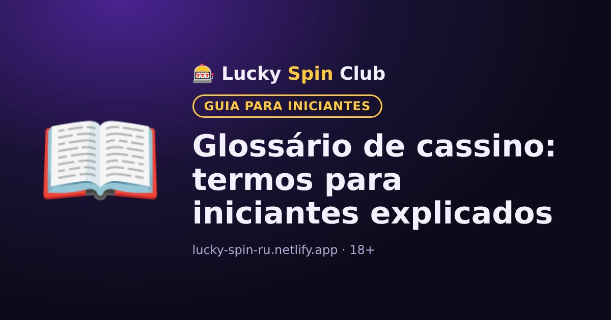

Glossário de cassino: termos para iniciantes explicados

Atualizado: 6 de novembro de 2026
Um glossário curto de termos que aparecem nos cassinos online. Se alguma palavra das regras de um bônus ou jogo não estiver clara, procure aqui.
Conceitos gerais
- Bônus
- Fundos extras ou giros grátis do cassino, normalmente com rollover.
- Rollover (wagering)
- Quantas vezes é preciso apostar o bônus para poder sacá-lo. Saiba mais em “O que é rollover”.
- Depósito
- Colocar dinheiro na conta de jogo.
- Verificação (KYC)
- Confirmação da identidade do jogador com documentos, normalmente antes do primeiro saque.
- Banca (bankroll)
- O valor que você separou antes para jogar e está disposto a perder.
- Cashback
- Devolução de parte do que foi perdido, conforme as regras de uma promoção.
- Programa de fidelidade
- Sistema de níveis ou pontos por jogar, com recompensas ao subir de nível.
- Autoexclusão
- Bloqueio voluntário da conta por um período escolhido; ferramenta de jogo responsável.
- Espelho
- Cópia do site do cassino em outro endereço. Use só endereços de fontes oficiais do cassino: golpistas criam espelhos falsos.
Caça-níqueis
- RTP
- Percentual de retorno ao jogador: que parte das apostas a máquina devolve em média em um período muito longo.
- Volatilidade
- Com que frequência e de que tamanho a máquina paga: baixa, sempre e pouco; alta, raramente mas muito.
- RNG
- Gerador de números aleatórios que define o resultado de cada giro.
- Giro (spin)
- Uma rodada dos rolos do caça-níquel.
- Linha de pagamento
- Linha nos rolos em que as combinações vencedoras contam.
- Wild (curinga)
- Símbolo que substitui outros e ajuda a formar combinações.
- Scatter
- Símbolo que paga em qualquer lugar da tela e muitas vezes ativa o bônus ou giros grátis.
- Giros grátis
- Rodadas sem custo: um bônus do cassino ou um recurso da própria máquina.
- Multiplicador
- Aumenta o prêmio em um número de vezes, por exemplo ×2 ou ×10.
- Megaways
- Mecânica em que o número de formas de ganhar muda a cada giro.
- Jackpot
- Prêmio grande. O jackpot progressivo cresce com parte das apostas dos jogadores.
- Bonus Buy
- Opção de comprar a rodada de bônus por um preço fixo em vez de esperar que ela saia.
- Modo demo
- Jogar com fichas virtuais sem arriscar dinheiro real.
Mesa e jogos ao vivo
- Vantagem da casa (house edge)
- A vantagem matemática do cassino em um jogo. Por exemplo, na roleta europeia é de cerca de 2,7%.
- Dealer (crupiê)
- A pessoa que conduz o jogo na mesa ou no estúdio ao vivo.
- Cassino ao vivo
- Jogos com dealer real em transmissão ao vivo.
- Blackjack
- Jogo de cartas contra o dealer: o objetivo é somar mais pontos que ele sem passar de 21.
- Split (dividir)
- No blackjack, separar duas cartas iguais em duas mãos.
- Dobrar
- No blackjack, dobrar a aposta e receber exatamente mais uma carta.
- Bacará
- Jogo de cartas em que se aposta na mão do jogador, da banca ou no empate.
Pagamentos
- Moeda da conta
- A moeda em que a conta de jogo é aberta. Muitas vezes não pode ser trocada depois do cadastro.
- Stablecoin
- Criptomoeda com preço atrelado ao dólar, como USDT ou USDC.
- Rede (TRC20, ERC20, BSC)
- A blockchain pela qual a cripto é enviada. A rede de envio precisa ser a mesma indicada pelo cassino.
- Limite de saque
- O valor mínimo ou máximo que pode ser sacado de uma vez ou em um período.
Quer experimentar? O cadastro leva cerca de um minuto.
🎁 Cadastrar e pegar o bônus18+ · Condições do bônus no site do cassino · ou compare os cassinos →
Perguntas frequentes
O que significa RTP nos caça-níqueis?
RTP é o percentual de retorno ao jogador: que parte de todas as apostas a máquina devolve em média em um período muito longo.
Qual a diferença entre wild e scatter?
O wild substitui outros símbolos em uma combinação, e o scatter paga em qualquer lugar da tela e muitas vezes ativa o bônus ou giros grátis.
O que é vantagem da casa?
É a vantagem matemática do cassino em um jogo. Por exemplo, na roleta europeia é de cerca de 2,7%.